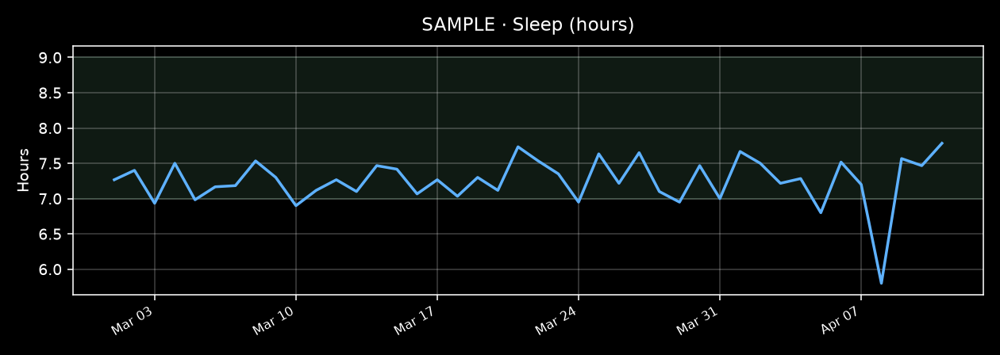
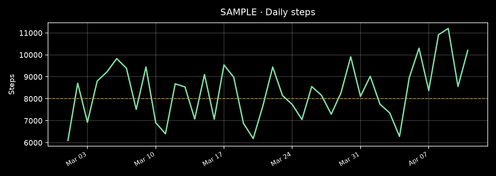
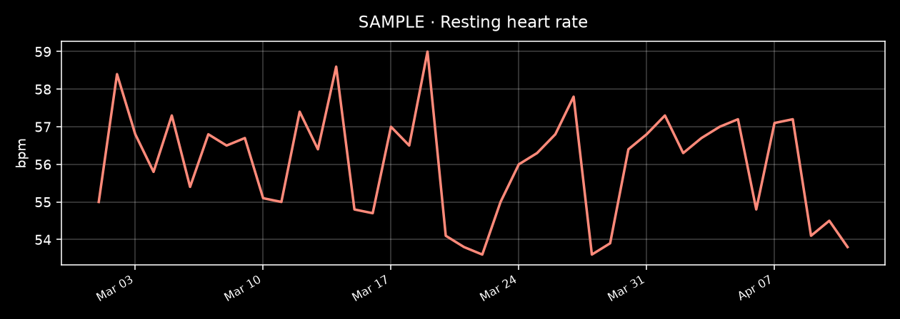
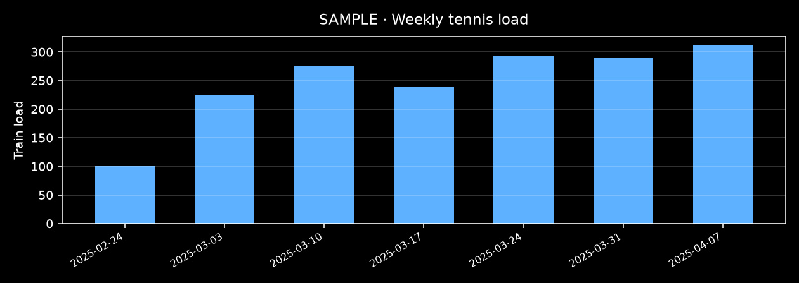

Sleep
7.2h avg
vs sample ~4 weeks 7.3h (-2%)
≈
Coach-light summary for self-awareness — not medical advice. All numbers on this page are synthetic SAMPLE data for a portfolio demo. Wearables guess; real bodies know. If something feels off in real life, talk to a clinician.
If last week were a restaurant order, our demo athlete didn’t get the light salad — they got the tasting menu and asked for extra bread. Sleep averaged a healthy 7.2h, like keeping the phone on overnight charge instead of living at 12% battery… except 2025-04-08 (~5.8h), which is the classic “one short night that makes the next day feel like Windows Update.”
Steps ran warm (~9,787/day). For perspective: many step challenges treat 10k as the vanity badge; WHO cares more that adults clear ~150–300 min/week of moderate activity (or 75–150 vigorous). Tennis alone was ~5.5 hours on court across 5 sessions — denser than a typical recreational template of 2–3 sessions / ~2–3 hours a week. At a club / league-adjacent (illustrative) level, volume actually taxes legs and focus, not just vibes.
Resting HR stuck around ~56. Untrained adults often cruise the 60s–70s; regular tennis players in research often land lower. The useful self-awareness bit: RHR stayed roughly flat while load moved ~58% vs the prior month. That may mean the week was absorbed okay; it does not mean cloning the week forever is free.
Guidelines for a recreational adult tennis player — not a diagnosis, not a training plan, and not tied to any real person.
Charts + daily numbers from sample_data/. Stress, SpO₂, and weight stay out of the default story. Open only if you want the plumbing.




| Date | Sleep | Steps | RHR |
|---|---|---|---|
| 2025-04-05 | 6.8h | 8952 | 57.2 |
| 2025-04-06 | 7.5h | 10304 | 54.8 |
| 2025-04-07 | 7.2h | 8377 | 57.1 |
| 2025-04-08 | 5.8h | 10916 | 57.2 |
| 2025-04-09 | 7.6h | 11202 | 54.1 |
| 2025-04-10 | 7.5h | 8560 | 54.5 |
| 2025-04-11 | 7.8h | 10201 | 53.8 |
| Date | Duration | Load |
|---|---|---|
| 2025-04-05 | 70 min | 89 |
| 2025-04-07 | 95 min | 113 |
| 2025-04-08 | 55 min | 59 |
| 2025-04-10 | 55 min | 65 |
| 2025-04-11 | 55 min | 74 |
CSVs: ../sample_data/daily_summary.csv, ../sample_data/workouts_tennis.csv.
In a real workflow you’d re-export from a wearable privacy download, clean to daily CSVs, then regenerate the brief. This repo ships sample data only — swap the CSVs to try your own (keep personal exports out of public remotes).
sample_data/ (same column names).python3 brief/generate_brief.py (optional --week-end YYYY-MM-DD).brief/index.html in a browser.